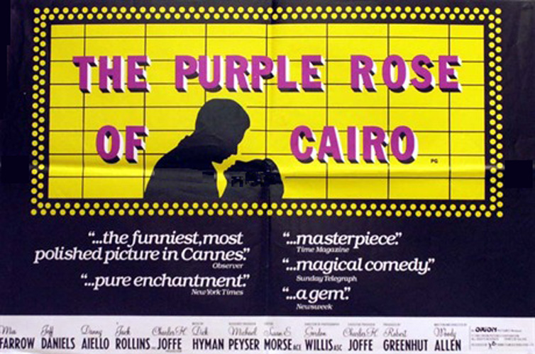
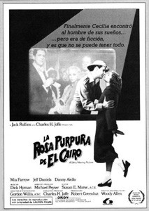
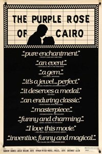
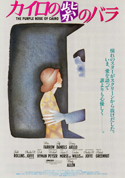
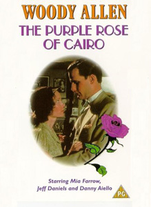
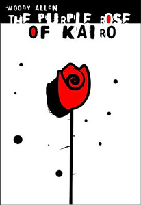
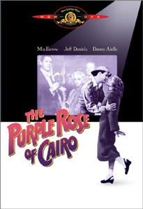

Inspired by Sherlock, Jr., Hellzapoppin' and Pirandello's Six Characters in Search of an Author, it is the tale of a film character who leaves a fictional film of the same name and enters the real world. Jeff Daniels plays the dual roles of Tom (the character in the film-within-the-film) and Gil (the actor who plays Tom). Tom literally breaks the fourth wall, emerging from the black-and-white film into the colourful real world on the other side of the cinema screen where he is drawn out by Cecilia (Mia Farrow), a film buff who goes to the movies to escape her bleak Great Depression life and loveless marriage to Monk (Danny Aiello).
Michael Keaton was originally cast as Tom Baxter/Gil Shepherd, as Allen was a fan of his work. Allen later felt that Keaton, who took a pay cut to work with the director, was too contemporary and hard to accept in the period role. The two amicably parted ways after ten days of filming and Daniels replaced Keaton in the role.
In a rare public appearance at the National Film Theatre in 2001, Woody Allen listed The Purple Rose of Cairo as one of only a few of his films that ended up being "fairly close to what I wanted to do" when he set out to write it.
Several scenes featuring Tom and Cecilia are set at the Bertrand Island Amusement Park, which closed just prior to the film's production. Many of the outside scenes were filmed in Piermont, NY, a tiny village on the Hudson River about 15 miles north of the George Washington Bridge. Store fronts had false facades reflecting the depression-era setting. It was also filmed at the Raritan Diner in South Amboy, New Jersey. Woody Allen shut down the Kent Theater on Coney Island Avenue in Brooklyn, the neighborhood he grew up in, to film there.
"I just met a wonderful new man. He's fictional, but you can't have everything."
"Delightful from beginning to end, not only because of the clarity and charm with which Daniels and Farrow explore the problems of their characters, but also because the movie is so intelligent." - Roger Ebert : Chicago Sun-Times
"It's a sweet, lyrically funny, multi-layered work that again demonstrates that Woody Allen is our premier film maker who, standing something over 5 feet tall in his sneakers, towers above all others." - Vincent Canby : New York Times





